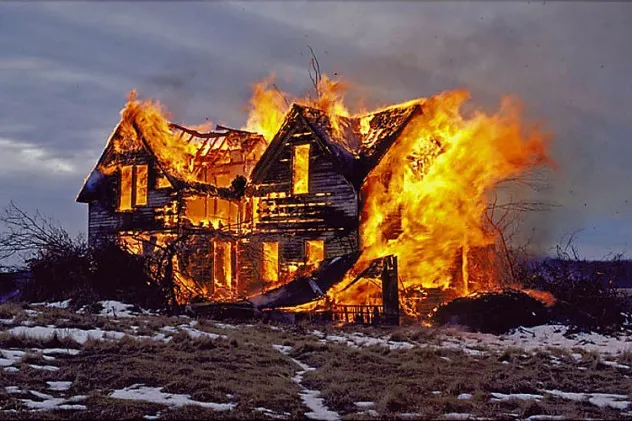
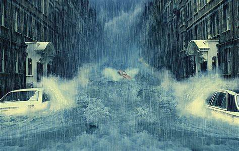
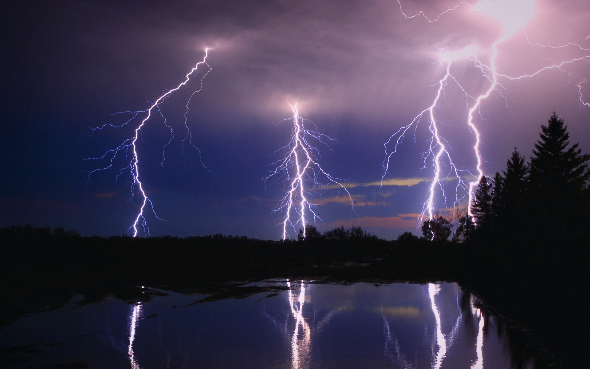
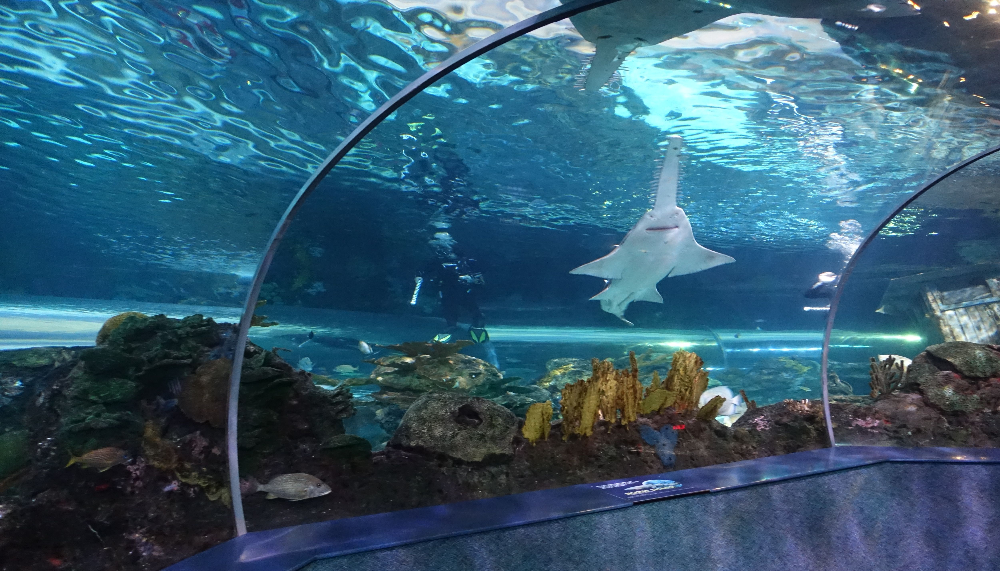
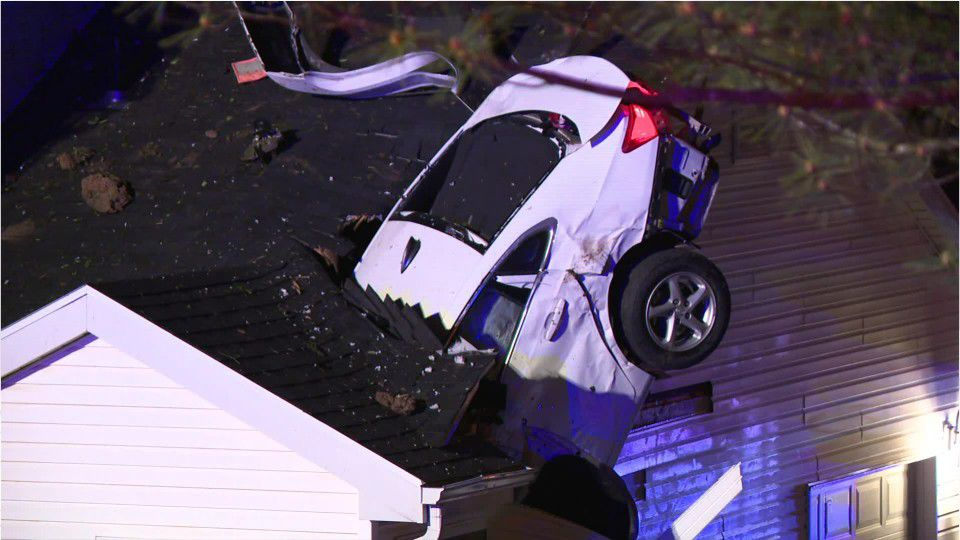

Fires can be devastating, and navigating the aftermath can be overwhelming. At Ayzertech, we specialize in handling fire claims and understand the urgency in getting your life back on track. From the moment you contact us, we take charge of arranging board up services to secure your property and proceed to handle the claim on your behalf.
Dealing with floods, especially in basements, can be exceptionally complex when it comes to insurance coverage. The extent of your coverage depends on various factors, such as the origin of the water and the type of water damage. We understand the intricacies involved, and we know that a single misstep while communicating with the insurance company can result in denial of coverage. Don't worry; we've got you covered.
When lightning strikes or there is electrical damage to your property, the damages can extend far beyond what meets the eye. We can put you in touch with a team of experts who can ensure your safetly and piece of mind while we handle your insurance claim.
Sometimes, life throws unexpected challenges our way, and we understand that the unimaginable can happen. Take, for instance, one of our customers who experienced the unexpected explosion of a 350-gallon fish tank. At Ayzertech, we're no strangers to handling crazy catastrophes, and we're here to manage even the most unusual situations with efficiency and expertise.
Accidents happen, even in the comfort of your home. Whether it's someone driving a car through your picture window or accidentally crossing wires while hanging a light fixture, Ayzertech is here to guide you through the process. We understand that mishaps can occur, and you might wonder if these damages are covered by your insurance. Ayzertech's team of experts can help you determine if the damage is covered and handle the entire claims process for you.
Severe weather conditions such as heavy storms can wreak havoc on your property, causing damage to siding and roofs. Don't settle for living with the aftermath. We're well-versed in handling storm related claims, and we won't let you face the burden alone. Our team is adept at dealing with insurance policies and can determine if the damage is covered.
Dealing with floods, especially in basements, can be exceptionally complex when it comes to insurance coverage. The extent of your coverage depends on various factors, such as the origin of the water and the type of water damage. We understand the intricacies involved, and we know that a single misstep while communicating with the insurance company can result in denial of coverage. Don't worry; we've got you covered.
Sometimes, life throws unexpected challenges our way, and we understand that the unimaginable can happen. Take, for instance, one of our customers who experienced the unexpected explosion of a 350-gallon fish tank. At Ayzertech, we're no strangers to handling crazy catastrophes, and we're here to manage even the most unusual situations with efficiency and expertise.
Severe weather conditions such as heavy storms can wreak havoc on your property, causing damage to siding and roofs. Don't settle for living with the aftermath. At Ayzertech, we're well-versed in handling storm related claims, and we won't let you face the burden alone. Our team is adept at dealing with insurance policies and can determine if the damage is covered.